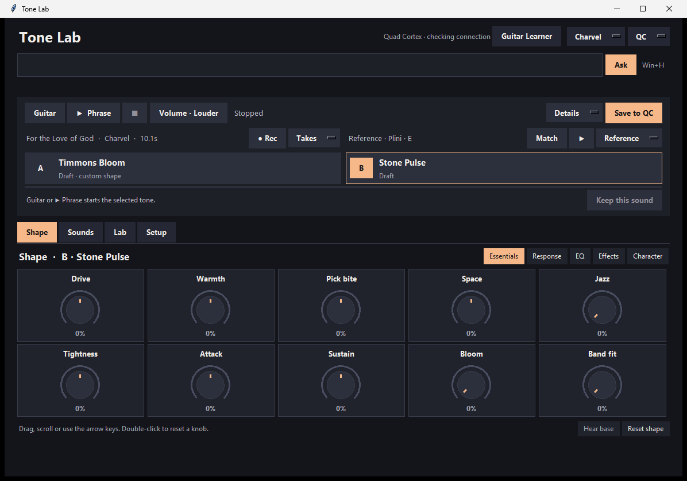

On air
ATimmons Bloom
BStone Pulse
GuitarPhrase10.1 s
closer to the reference/
The first pass of this concept answered "the app hides what it knows" by showing all of it at once. That was the wrong fix. Most of the time you want almost none of it. This pass keeps the desk nearly empty and lets each piece arrive when there is a reason, then leave. Which pieces belong together is left open on purpose: you pin what you use, and the desk remembers.
B sits 3 dB under the reference at 2.5 kHz.
Static concept. Tone names and the phrase length come from your current session. The request, the clipping warning and the measured values are illustrative.
The resting desk holds two tones, the input switch and a request line. A second thing appears only because you called it or something happened.
Meters, routing, device state and loudness matching are checked constantly and shown only when they fail.
The reading of your request, progress and confirmations are single lines that retire into history by themselves.
No tabs. Any panel is one key, one phrase or one glyph away, and one panel is open at a time unless you pin it.
Colour says which tone, light says on air, a dot says healthy. Labels appear on hover and focus.
Nobody knows yet which panels you need together. The app logs what you open and pin in each situation, then offers that set next time.
| Piece | Shows by itself when | You call it with |
|---|---|---|
| What's on air | Always: the lit tone and the dot | |
| Guitar or Phrase | Always: both one click away | G · P · Space stops |
| Keep and Save | Keep once something is on air. Save once something is unsaved. | K keeps what you hear. Saving to the Quad Cortex is a separate step. |
| How a request was read | After each request, one line with undo | "What changed" for the parameters |
| Shape knobs | A request moved one | S · last-touched first, only what the chain has |
| Difference | You set a reference | D · R plays the reference |
| Chain and rationale | A new sound was built, once | C · click the tone's name |
| History | Never | Z undoes · H opens the strip |
| Levels | Clipping, silence or a mismatch | L |
| Your sounds | Never | Type a name in the request line |
| Recording | Never | "keep that" takes the last 20 s |
| Setup, Guitar Learner | Never | The menu. They stay off the desk. |

| You type, with a draft on B | Today | Should |
|---|---|---|
| the low end gets muddy when I palm mute | Builds a new preset with web research, up to 85 s, then replaces B | Tighten B, one line, undo |
| undo | Builds a new preset and replaces B | Revert the last change |
| switch to A | Builds a new preset and replaces B | Flip to A |
| save this | Builds a new preset and replaces B | Save what's on air |
| more jazzy | Subprocess round trip. "more jazz" is instant | Both instant |
The full findings with file references, and the panel specifications, are saved in the repository as UX_REVIEW.md.